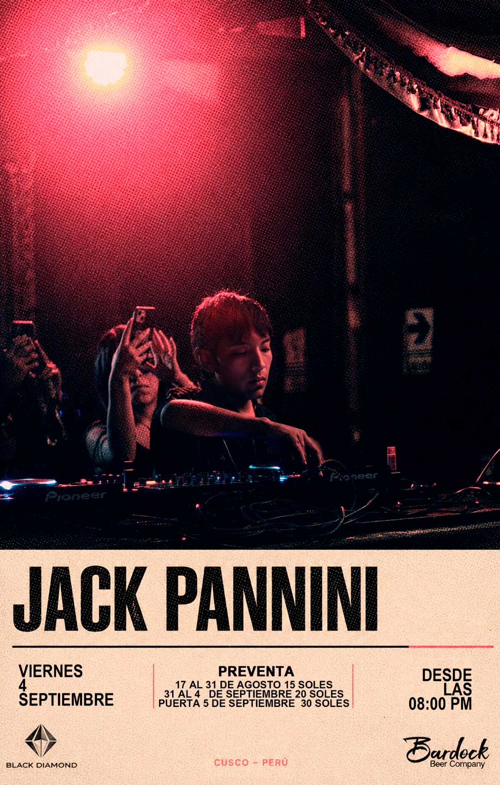

JACK PANNINI
fecha: 04/09/26 hora: 8pm - 4am
lugar: Bardock Beer Company,
Sta. Catalina Angosta 113, Cusco


El viernes 04 de septiembre nos acompaña desde lima :
Jack Pannini, DJ y productor peruano comienza su carrera
musical en el 2024.
En lo que va de su carrera en poco tiempo se ah ganado el
respeto de la escena con su talento para mezclar. Con el
tiempo que va ah llegado a tocar en buenas residencias
como LA CASONA DE CAMANA, LYRA, BIZARRO, LA
RESIDENCIA, ETC.
Este año esta empezando a producir y sacar track que seran
todo un exito....
Preventas al : 900265025 ( Black Diamond )
Location : Bardock ( Centro historico )
Abrimos puertas : 8 pm - 4 am
LINE-UP:
Jack Pannini